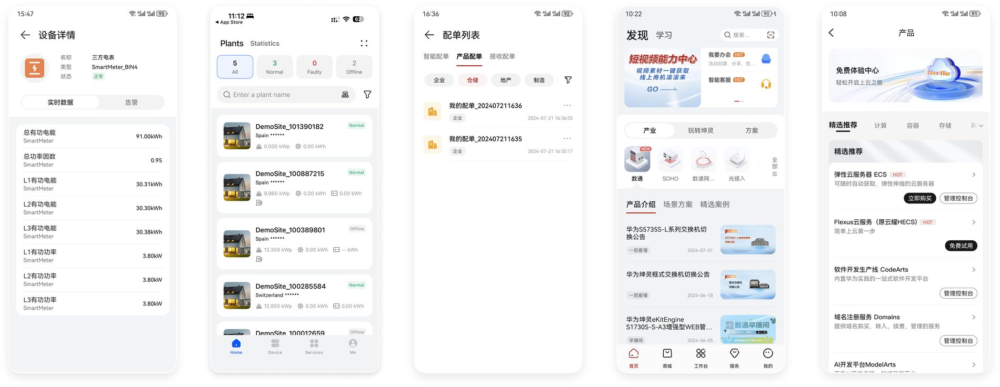
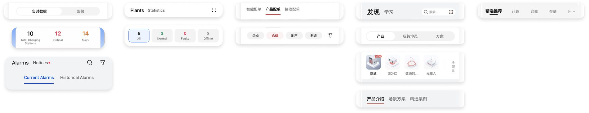

01Five apps, five design teams
Huawei’s B2B apps are built by different subsidiaries. 亿企飞 (eplussoho) by one team, 坤灵 (eKit) by another, then Huawei Cloud, Digital Power and Smart PV. Each team has its own designers, its own release schedule and its own reasons for the choices it makes.
Put the five apps side by side and they look like five companies. Each one has a design system behind it, and each system follows its own set of principles.
I was in the User Centre Design team, which sits above all five. Together we found where the five had drifted, wrote the rules that bring them back, and built the design system and the library those rules live in. Inside that, I owned the rules and the design build for a set of sub-components. Tabs and search were mine.

02The same component, five ways
A tab is the smallest decision in an app. You tap it, something below changes. Every one of the five apps had them, and every one had drawn them differently.
One used a capsule. One used a slider. One used an underline. Two used more than one style in the same app, on different screens.

None of this was wrong on its own. Each team had made a reasonable choice for its own product. The problem only appears when a person uses two of these apps in the same afternoon, which is exactly what Huawei’s B2B customers do.
The three styles, drawn clean and put next to each other. These are live components on this page.
03Three questions nobody had answered
When I looked at why the drift happened, it came down to three questions that the design system had never answered.
- Which style means what? Capsule, slider and underline were all in use, and none of them carried a fixed meaning. A person could not learn the pattern because there was no pattern.
- What happens when tabs stack? Some screens had two layers of tabs. One had four, which is the fourth column in the picture above. There was no rule for which layer takes which style, so every screen solved it locally.
- Where are tabs allowed to live? Tabs appeared in the title area, under the title area, and inside cards. Sometimes the title area held a title and tabs at once, sometimes only tabs.
04Looking outward
Before writing anything I read how the two systems these apps sit on top of handle it. HarmonyOS 5.0 and iOS 18.
The finding that decided the specification: HarmonyOS 5.0 no longer recommends putting tabs in the title area. The title area is for saying where you are. Tabs are for moving. Once those two jobs are separated, most of question three answers itself.
iOS 18 gave me the second half. It treats the segmented control as a different component from a tab bar, with a different job and a different size limit. That gave me a name for the thing the five apps kept confusing.
05Three strategies
Converge the styles
Three visual treatments for one component means a person has to learn three things. I reduced it to one style per job, so the treatment tells you what the tab does.
Give each type a scope
Each tab type got a defined range: what level of the page it controls, how many items it can hold, and where it is allowed to appear. Scope is what stops a component drifting back.
Write the stacking rules
Two-layer and three-layer combinations got explicit rules for which type sits at which level, so a team building a deep screen has an answer already.
06The specification
The specification defines six types. Each one below is live on this page, rebuilt in HTML and CSS.
主页签 Primary Tab
- Controls
- The whole page
- Count
- 3 to 7
- Treatment
- Underline indicator
- Stands alone
- Yes, one per screen
子页签 Sub Tab
- Controls
- Content inside the current page
- Count
- 3 to 10
- Treatment
- Capsule
- Stands alone
- No, only under a primary tab
页签分段按钮 Segmented Button
- Controls
- The view of the same content
- Count
- 2 to 4
- Treatment
- Slider
- Stands alone
- Yes
卡片内页签 Card Tab
- Controls
- Content inside one card
- Count
- 2 to 4
- Treatment
- Underline, card scale
- Stands alone
- Yes, inside its card
特殊页签 Special Tab
- Controls
- Category entry points
- Count
- 3 to 7
- Treatment
- Image-led
- Stands alone
- Yes
三层页签组合 Three-Layer Combination
- Controls
- Primary, then sub, then segmented
- Count
- Three layers is the limit
- Treatment
- A different treatment per layer
- Stands alone
- Combination only
| Type | Controls | Count | Treatment | Stands alone |
|---|---|---|---|---|
| 主页签 Primary Tab | The whole page | 3 to 7 | Underline indicator | Yes, one per screen |
| 子页签 Sub Tab | Content inside the current page | 3 to 10 | Capsule | No, only under a primary tab |
| 页签分段按钮 Segmented Button | The view of the same content | 2 to 4 | Slider | Yes |
| 卡片内页签 Card Tab | Content inside one card | 2 to 4 | Underline, card scale | Yes, inside its card |
| 特殊页签 Special Tab | Category entry points | 3 to 7 | Image-led | Yes |
| 三层页签组合 Three-Layer Combination | Primary, then sub, then segmented | Three layers is the limit | A different treatment per layer | Combination only |
07The identity card system
The other problem in these apps was people. A B2B platform is full of roles, and each one is a different kind of expertise standing behind the same screen. Online, everyone looked the same, and a person was being asked to trust an account with a name on it.
- Supplier
Provides the components, and the supply chain behind them.
- Installer
Puts it on the roof, and answers for the safety of the work.
- Channel partner
Opens the market, and carries the business relationship.
- Field engineer
On site when it stops working, and responsible for it running.
- Sales
Reads what the customer needs, and shapes the offer to it.
Offline this problem was solved a long time ago. You hand someone a business card. Front is the person. Back is the company.
With the UX team I designed that as a component. The front of the card is the individual, their name, their role and how to reach them. The back is the company they belong to, which is the part that actually carries the trust.
So it turns over. The card below is a live component on this page. Click it, or focus it and press space.
I drew this card after I left Huawei, as a low-fidelity mockup for this page. The designs that shipped stay inside the company.
08Reading the numbers
Alongside the tabs I worked on one of the web platforms, where the question was which features were in the wrong place. The user research team had the behaviour data, so every suggestion I made started from a signal and a reading of it.
| What the numbers said | What it usually meant |
|---|---|
| The same function sat on several pages, and the clicks were spread thin across them. | The entry path needed reorganising. The feature was fine. |
| Plenty of taps, almost no time on the page. | An accidental tap, or a label promising the wrong thing. Interviews told us which. |
| Few taps, and a long stay once people arrived. | Worth finding and hard to find, so the fix was placement. |
| People leaving halfway through a task. | The screen never told them they had finished. |
09What it came to
I handed the specification to five product teams. Each one builds on its own schedule, so the change arrives at a different speed in each app, and that is how a design system in a large company actually lands.
What I took from it: a rule only works if it tells you what to do, and saying what is correct is a weaker thing to write. Every line in the specification names a job, a count and a place. A team reading it at eleven at night with a release tomorrow can follow it without asking anyone.
This was my first time writing a component specification. It changed what I think a design system is for.
10After the internship
Two things happened once I left. Neither was asked for, and that is why I keep them here.
My manager wrote about me publicly
The head of user research on my team posted about me on her own social media, to her own network. Her name and picture are covered here, and I have cut the part about hiring for the next intake. What is left is what she said about the work.
The photographs in her post come from two places. The top row is my TEDx talk. The bottom row is me sharing work inside Huawei, to the team and to the wider department. I am glad she kept both, and I hope to keep going in this industry for a long time.

Our team’s 2024 intern, Yidan Xu, just spoke at TEDx in July about design giving power back to everyday life. She was lovely and sharp the whole way through. Her work during the internship was outstanding too. A girl who is both beautiful and clever is a sight worth seeing, wherever she goes.
Translated from the Chinese.

A colleague marked my report A+
A second colleague came to find me after I had gone. He told me he had read my final report and graded it A+. He did not have to tell me. That is the part I remember.